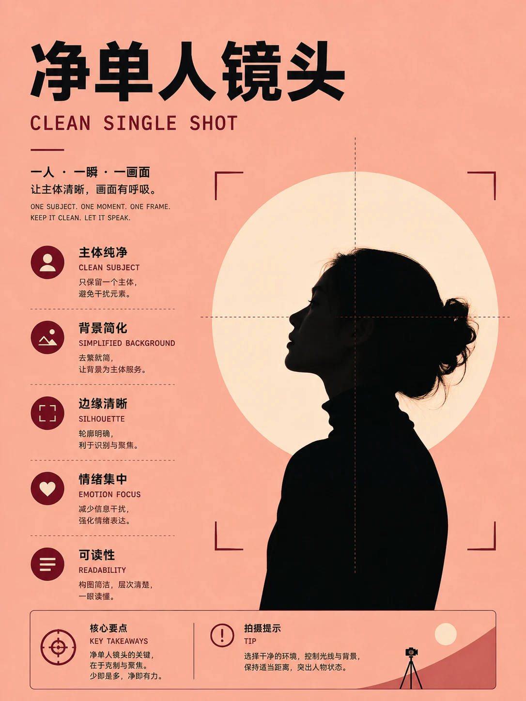

先物理清场，再动光圈
把入画边缘的杂物、群演与头顶竖线直接移出取景角。凡是眼睛在现场就能挪走的穿头柱子，绝不指望后期修掉。
CLEAN SINGLE SHOT
一人 · 一瞬 · 一画面
让主体清晰，画面有呼吸。
ONE SUBJECT. ONE MOMENT. ONE FRAME.
KEEP IT CLEAN. LET IT SPEAK.
直点画面红标清场 · 横拖圆月光池贴合侧影 · ←/→ 移光池 · Shift+←/→ 调呼吸落位 · Space 读图
左缘闯入同伴黑肩，镜头已滑成脏单人
左侧前景被另一人的肩影占去约 22% 画幅。观众一眼先问「对面站着谁」，注意力不再属于主角一人。
直接点击画布左侧的虚线红框黑肩（或关掉「前肩干扰」），把同伴请出画框。
选择干净的环境，控制光线与背景，保持适当距离，突出人物状态。
原海报总括：「净单人镜头的关键，在于克制与聚焦。少即是多，净即有力。」
WHY CLEAN SPEAKS
人眼扫过银幕的前半秒，会自动把画面拆成「要看的图形」和「退后的底子」。只要画面里出现第二颗人头、一支亮灯或一根切过脑顶的柱子，大脑就必须分出一半带宽去判断它和主角是什么关系。
净单人镜头把这些竞争线索全部清场：「主体纯净」（只保留一个主体，避免干扰元素）、「背景简化」（去繁就简，让背景为主体服务）、「边缘清晰」（轮廓明确，利于识别与聚焦）、「情绪集中」（减少信息干扰，强化情绪表达）与「可读性」（构图简洁，层次清楚，一眼读懂）其实是同一件事的五面——让轮廓边界的归属权唯一属于眼前这一个人。
FIGURE-GROUND TONAL BENCH
原海报极性：极深侧影配淡奶黄亮圆月，明度比拉开后轮廓瞬间锁死为前景图形。
CINEMA LINEAGE
把人物从嘈杂背景里单独拎出来，并非短视频时代的发明。从 1915 年视觉心理学奠定图底轮廓定律，到默片与现代电影把素墙单人拍成灵魂肖像，再到当代摄影教材把「净单人」与「脏单人」写成片场覆盖术语，背后是一条跨越百年的克制美学脉络。
Carl Theodor Dreyer 与摄影师 Rudolph Maté 放弃繁复布景，让 Renée Falconetti 反复独自立于几乎空白的浅白灰泥墙前。彻底净化的背景把审讯压迫与孤独感推向极致。
引用的年份、影片与论著均核实自丹麦电影学院德莱叶档案、伯格曼基金会、Berghahn 与 Routledge 出版目录。
FOUR PILLARS ON SET
镜头干不干净，七成在按下录制键前就决定了。新手常以为「买一支 f/1.4 大光圈镜头就能虚化一切」，但只要人物离后墙只有半米，或者平光在脑后打出一团黑影，大光圈也救不回杂乱边缘。拉动下方「人物距墙」标尺，亲眼看物理距离和布光如何联手清场。
贴墙平光是最常见的片场翻车：即使镜头开到 f/2.0，墙面也在清晰景深内，机顶光还会把硬黑重影直接打在脑后。把人物向前拉离后墙 2.2 米以上，再切逆光亮底或主光暗底看看。
把入画边缘的杂物、群演与头顶竖线直接移出取景角。凡是眼睛在现场就能挪走的穿头柱子，绝不指望后期修掉。
片场经验值：尽量让人物离后墙达到 2.2 米以上（或大于机位到人物的距离），配合 50–85mm 中长焦与 f/1.8–f/2.8 浅景深，背景杂纹才真正化开。
暗主体找亮背景（如 308 原海报的淡奶黄圆月），亮主体找暗背景（暗幕或负补光）。轮廓两侧只要拉开明显明度差，发丝与下颌线立刻立住。
人物朝左看，就在左侧留出 34%–60% 视线净空（经验值），头顶留 8%–20% 空气。净不是死抠居中，而是让目光有去处。
WHEN TO USE IT
EMOTIONAL TURN · 经验值处方
双人对话进行到关键摊牌时，突然从带肩过肩镜切进一颗干干净净的净单人，等于在视觉上瞬间掐断外界杂音。观众再也不关心对方怎么回应，全部注意力坠入角色内心。
PSYCHOLOGICAL ISOLATION · 经验值处方
就算房间里坐着另一位角色，只要在剪辑里刻意拿掉对方的入画肩膀、再给主体配上一大片空荡的素底负空间，观众就会立刻感到两人之间筑起了一道无形高墙。
DOCUMENTARY & PORTRAIT · 经验值处方
信息密度高的讲述型内容，最怕杂乱书架或来回走动的同事偷走注意力。把受访者摆在干净素墙或浅景深柔和窗光前，视线顺着采访者方向展开留白，既稳重又不让人疲惫。
EDITING BREATH · 经验值处方
连续十几秒信息过载的动作镜头后，切入两三秒极简、静止、轮廓清晰的净单人，能让观众的视觉与情绪瞬间沉下来，就像音乐里的休止符一样放大下一拍的冲击力。
WHEN TO AVOID
每一条构图法则都有它的边界。净单人最擅长「隔离与聚焦」，但也正因为太干净，在以下四种情境里硬套净单人反而会削弱故事——点每张卡片翻看对症解法。
全片只切净单人正反打，对手在画面里毫无压迫存在，看起来像两个人隔空各自录独白，空间张力掉一半。
一上来连续给素底净单人，观众完全摸不清人物是在车站、法庭还是卧室，以及门在哪、退路在哪。
先用 307 客观视角构图 建立空间全景与路径，再切回净单人收束情绪。
推门瞬间的惊恐或拆信一刻的悬念，光拍主角干净侧脸只能让观众旁观情绪，无法共享第一人称视角。
把净单人作为反应镜，搭配 306 主观视角构图，一正一反完成悬疑揭示。
在街头纪实或生活戏里把背景强行磨成死白/死黑一片，人物像被抠图贴在纸上，瞬间失去时间与空气真实感。
简化不等于清空：保留低反差的环境色温、一抹柔和窗光或柔焦光晕，让画面干净却仍有呼吸。
FRAMING PRACTICE
同一位面向左侧的角色、同一支 85mm f/2.0 镜头、同样零路人零遮挡的纯净背景与贴合人物的淡奶黄圆月光池——下面四帧唯一不同的变量，是人物在画框中的水平落位。哪一帧真正做到了「主体清晰，画面有呼吸」？
ORIGINAL POSTER & KEYWORDS

ONE SUBJECT. ONE MOMENT. ONE FRAME. KEEP IT CLEAN. LET IT SPEAK.
一人 · 一瞬 · 一画面。让主体清晰，画面有呼吸。